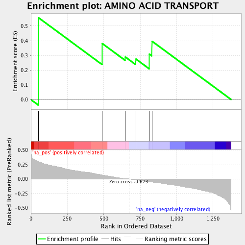
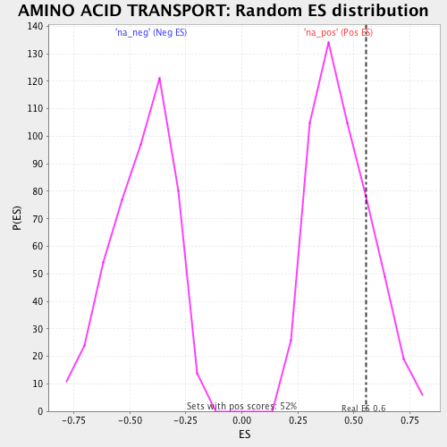

| | | Dataset | ranked_by_GEF.rnk |
| Phenotype | NoPhenotypeAvailable |
| Upregulated in class | na_pos |
| GeneSet | AMINO ACID TRANSPORT |
| Enrichment Score (ES) | 0.5561821 |
| Normalized Enrichment Score (NES) | 1.2606105 |
| Nominal p-value | 0.19923371 |
| FDR q-value | 0.77531457 |
| FWER p-Value | 1.0 |
Table: GSEA Results Summary

Fig 1: Enrichment plot: AMINO ACID TRANSPORT
Profile of the Running ES Score & Positions of GeneSet Members on the Rank Ordered List
| PROBE | GENE SYMBOL | GENE_TITLE | RANK IN GENE LIST | RANK METRIC SCORE | RUNNING ES | CORE ENRICHMENT | | 1 | RHB1 | | | 52 | 0.304 | 0.5562 | Yes |
| 2 | TAT1 | | | 490 | 0.074 | 0.3806 | No |
| 3 | TAT2 | | | 647 | 0.012 | 0.2898 | No |
| 4 | GNP1 | | | 720 | -0.020 | 0.2758 | No |
| 5 | ALP1 | | | 813 | -0.051 | 0.3087 | No |
| 6 | NPR2 | | | 831 | -0.051 | 0.3966 | No |
Table: GSEA details [plain text format]

Fig 2: AMINO ACID TRANSPORT: Random ES distribution
Gene set null distribution of ES for AMINO ACID TRANSPORT